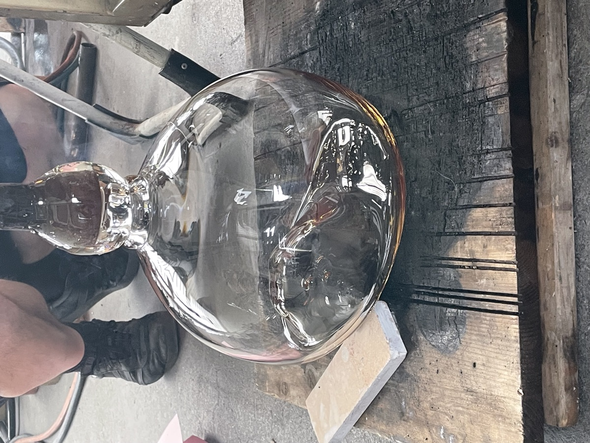
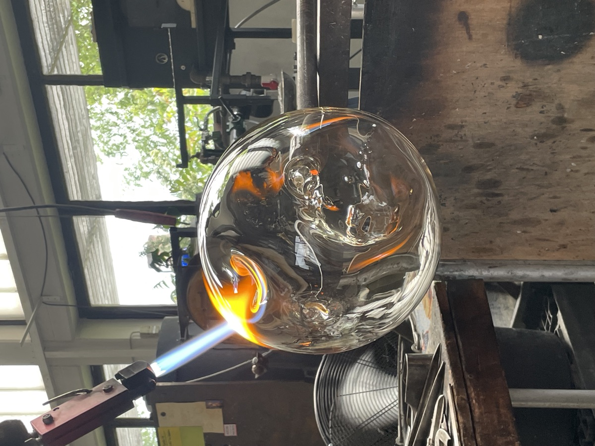
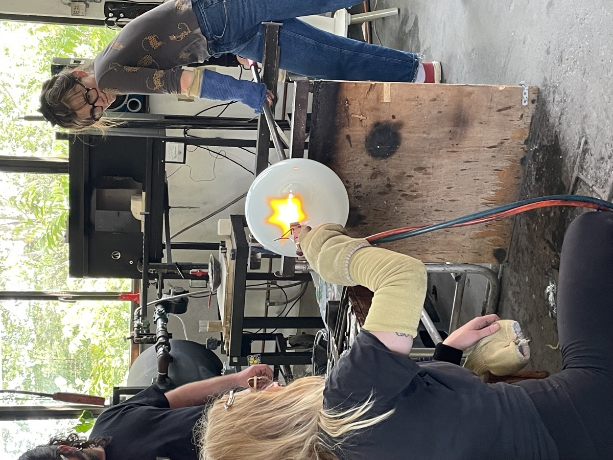

Hypersea
We have been using the Hypersea concept by Mark A. S. McMenamin and Dianna L. Schulte McMenamin as prompts to remember and reimagine. Inviting participants to reconsider their entanglement with water, to recall the partial liquidity of their own bodies, and to sense the connective tissue that water forms across ecosystems.
Reading
We created the glass sculptures working with the materiality of sand as an object of the Hypersea, a point of remembering. Sand is already sea — ground shell and rock and marine sediment gathered by the water — and in melting it into glass we make one more Hypersea gesture: sea-matter changing state, becoming a vessel that can hold field recordings from the Esposende coastline and the stories entangled with sargassum. The sculpture becomes a body of water in another form, a place where the ocean is remembered rather than extracted.



glass blown by @berlinglassworks and @vivianestroede